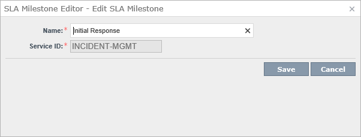

Table Of Contents

Admin | Process Automation | [Choose Service] | Service Dashboard
Manage SLA Milestones
Examples
| Name | Service ID |
|---|---|
| Resolution | INCIDENT-MGMT |
| Initial Response | INCIDENT-MGMT |
You can edit these

These are then used in the SLA Levels. Each one has a Milestone value.
Videos
ServiceDesk Configuration: SLA Framework Overview
https://www.symantec.com/connect/videos/servicedesk-configuration-sla-framework-overview
This video provides an overview and demonstration of using the SLA framework in ServiceDesk 7.5. The video will cover creating business hours, creating SLAs, applying SLAs based on rulesets, and taking action when an SLA is missed.
If you prefer a written Article to a video see the transcription below:
There are 3 Principle Components
- Set Business Hours Configuration
- Create SLAs
- Rulesets for SLA
We need to set the Business Hours in
Process Manager.
Go to Admin | Data | Business Hours
There will be a Business Hours Configuration grouping with a Default Business Hours item. If you click on
Edit you can then set the Begin and End times as well as which days are the weekend.
To add more click +
Name: Extended Hours Begin Business Hours 7:00 AM End Business Hours 7:00 PM Holidays Date: Description: Weekends Monday Friday --- --- --- --- Tuesday Saturday Wednesday X Sunday Thursday
Name: 24x7 Begin Business Hours 12:00 AM End Business Hours 11:59 PM Holidays Date: Description: Weekends Monday Friday --- --- --- --- Tuesday Saturday Wednesday Sunday Thursday Now we can create some SLAs which we can assign these Hours too.
Click on Admin | Process Automation
Expand Incident Management and click on Service Dashboard.There are a few options on the left hand side for SLAs.
- Manage SLA Levels
- Manage SLA Escalations
- Manage SLA Milestones
There are 2 Milestones
- Resolution
- Initial Response
SLA Levels
Click on Manage SLA Levels on the left hand side.
We want to create a new one so click on Add SLA Level.
Set some values.
Service ID: INCIDENT-MGMT Level: VIP Description: This is for VIPs Milestone: Initial Response Escalation: Late Late Date: Days: 0 Minutes: 30 Use Business Hours X Business Hours: Extended Hours Once you press Save this will show in the original list.
Now we can use this in a Ruleset so click on Manage Rulesets on the left hand side.
Expand OnIncidentReceived.
Click on the
Add Rule.
Now we can add a Group and Condition.
Affected User Is VIP Next is our Action.
Set SLA For Configuration Level Initial Response - Late (VIP) Parameters
Replace Existing SLAs: X User Date: UseProcessStartDate We will now see the Rule in the list.